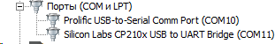
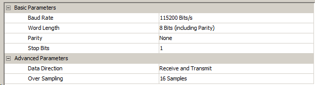
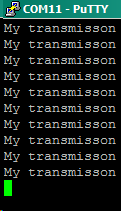

Подключаем модуль CP2102 кросом (TX-RX, RX-TX), запитываем и устанавливаем драйвера.
В диспетчере девай определяется как виртуальный COM-порт (в моем случае COM11):

Включаем USART в асинхронном режиме.
В параметрах смотрим/выставляем скорость и прочее, чтобы настроить терминал на ПК.

Сохраняем и генерируем код.
В файле hal_uart.h ищем функцию передачи данных:
HAL_StatusTypeDef HAL_UART_Transmit(UART_HandleTypeDef *huart, uint8_t *pData, uint16_t Size, uint32_t Timeout)
В качестве параметров передаем адрес на uart, данные (в нашем случае массив), их размер и задержку.
Получается следующее:
/* USER CODE BEGIN 1 */
uint8_t string[] = "My transmisson\r\n";
/* USER CODE END 1 */
while (1)
{
/* USER CODE END WHILE */
/* USER CODE BEGIN 3 */
HAL_UART_Transmit(&huart2, string, 16, 0xFFFF);
HAL_Delay(700);
}
/* USER CODE END 3 */
Прошиваем и в терминали наблюдаем спам сообщений:

Теперь настроим прием данных и вывод их на дисплей LCD1602. Берем либы для дисплея из предыдущего проекта и в кубе настраиваем порты для него:
#define LCD_SYSPORT GPIOB
#define LCD_RS GPIO_PIN_9
#define LCD_E GPIO_PIN_8
#define LCD_DATPORT GPIOD
#define LCD_D7 GPIO_PIN_7
#define LCD_D6 GPIO_PIN_6
#define LCD_D5 GPIO_PIN_3
#define LCD_D4 GPIO_PIN_4
Не забываем включить прерывания для USART.
Генерируем код.
В main.c наш код следующий:
/* USER CODE BEGIN 1 */
uint8_t strWelcome[] = "Welcome!\r\n";
uint8_t uartByte = 0;
uint8_t lineNum = 1;
/* USER CODE END 1 */
/* USER CODE BEGIN 2 */
lcdInit();
HAL_UART_Transmit(&huart2, strWelcome, 10, 0x0F);
HAL_UART_Receive_IT(&huart2, &uartByte, 1);
/* USER CODE END 2 */
Если не вызвать HAL_UART_Receive_IT(&huart2, &uartByte, 1); до цикла, то мы получим содержимое ячейки на экране. Вызываем функцию, чтобы сбросить флаг прерывания.
/* USER CODE BEGIN WHILE */
while (1)
{
/* USER CODE END WHILE */
/* USER CODE BEGIN 3 */
if(huart2.RxXferCount == 0)
{
HAL_UART_Receive_IT(&huart2, &uartByte, 1);
HAL_UART_Transmit(&huart2, &uartByte, 1, 0x0F);
//enter
if(uartByte == 0x0D)
{
uartByte = '\n';
HAL_UART_Transmit(&huart2, &uartByte, 1, 0x0F);
if(lineNum == 1)
{
lcdSendCmnd(LCD_SECOND_LINE);
lineNum = 2;
}
else
{
lcdSendCmnd(LCD_HOME);
lineNum = 1;
}
}
//backspace
else if(uartByte == 0x7F)
{
lcdSendCmnd(0x01);
lcdSendCmnd(LCD_HOME);
}
//other symbols
else
{
lcdSendCode(uartByte);
}
//end
}
}
/* USER CODE END 3 */
Enter - переключение строки.
Backspace - очистка содержимого экрана.
Все данные, введенные в консоли, возвращаются в нее же, а также выводятся на дисплей.
huart2.RxXferCount принимает нулевое значение, закончен прием всех данных (при вызове HAL_UART_Receive_IT(&huart2, &uartByte, 1); мы указываем размер буфер - 1 в нашем случае).
Коммент на счет RxXferCount:
"STM-овцы дико обосрались с приёмом по уарту. А именно избавились в этом ХАЛе от флага IDLE, который всегда безошибочно определял приход пакета. Достаточно было врубить приём по DMA размером с запасом и отрабатывать прерывание UART по флагу IDLE. Конечно? и сейчас можно добраться до этого флага через CMSIS - из регистров он ни куда не делся. Но тогда встаёт вопрос: на кой нам такой ХАЛ? Мой собственный ХАЛ, накатаный на SPL, куда гибче и практичней. А принимать по одному байту и таким образом постоянно передавать контекст программы в обработчик прерывания - детский сад и прошлый век. Это претензия к STM-овцам. Резюмируя: HAL_UART - отстой."